CEL-BOIL / TWO DIFFERENT STORIES逐帧手绘 · 从担心到安心；动作本身说明接住、举起和分享。
原缺口
整体翻滚与抓取跳位较多，蒲公英情节固定。
实际重做
兔子接光与熊撑叶伞是独立角色、道具与场景。手与道具共用位置，关节求解连接肩、肘、掌；屈膝、腾空、落地、耳朵、眼口和围巾分别编排。
源库 / 修改前 / 0.17
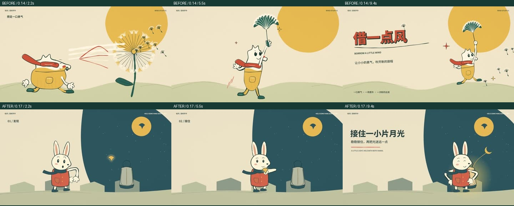
上排修改前 / 下排0.17 · 2.2、5.5、9.4秒实际编码影片取帧展开两支新片的完整时间线取帧
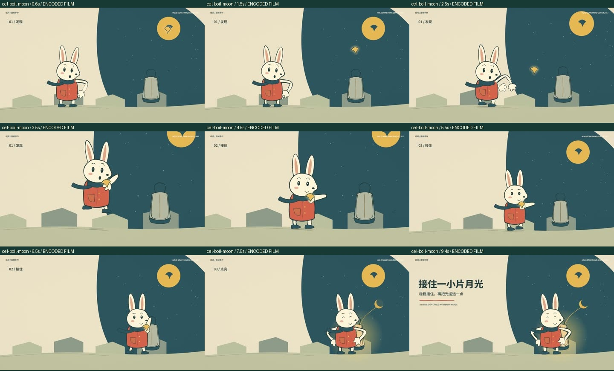
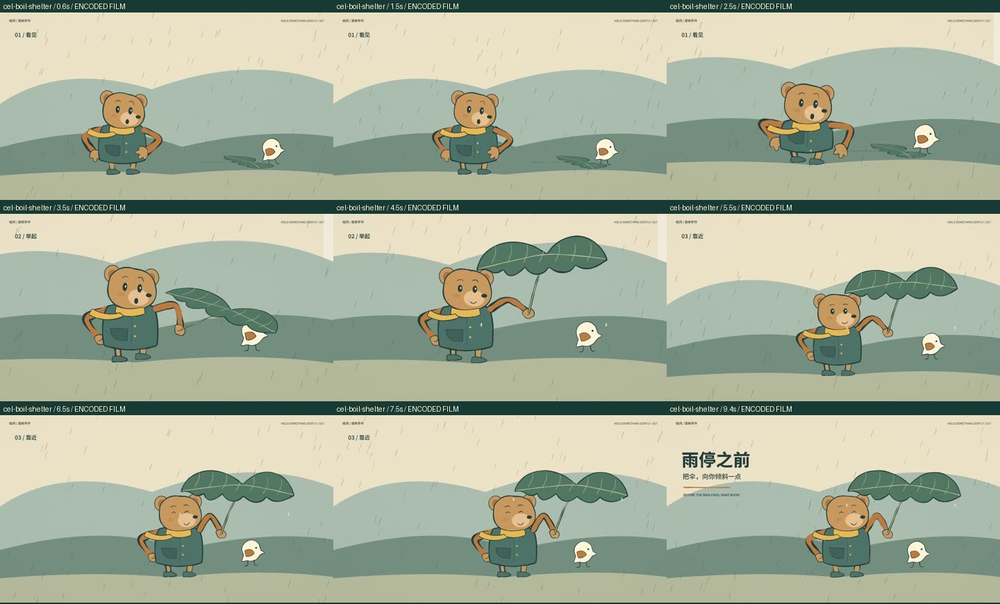
展开首轮关键帧，查看为什么返修
首轮独立渲染的关键帧，用于制作决策，不当作完整作品。最终编码影片的时间线在上方。
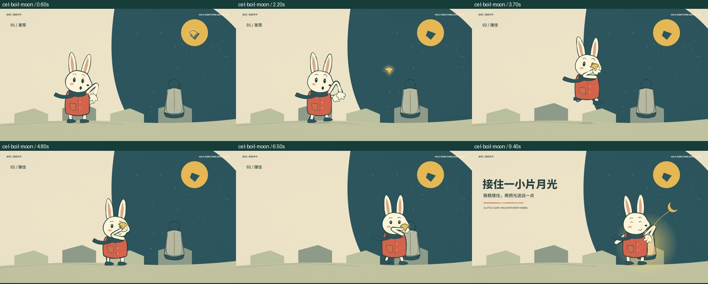
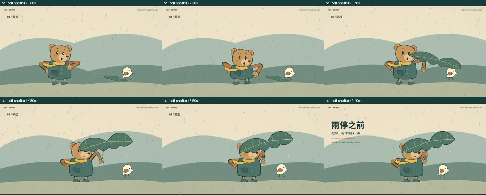
仍需继续的部分：仍是代码骨架与路径表演，非人工逐张原画。表情、重心与手掌的精细程度仍有提升空间；接触没有物理碰撞，不能直接替换任意角色。
MORPH / TWO DIFFERENT STORIES形变动画 · 日常物件，接出一段想走远的心情。
原缺口
气球停留偏长，转变的受力与部件身份弱。
实际重做
信封→帆船→鲸→海岛；怀表→双轮车→游乐转轮。轮廓、附着部件、孔与结构线共同插值，转变有受压和释放，最后保留物件组成海报。
源库 / 修改前 / 0.17
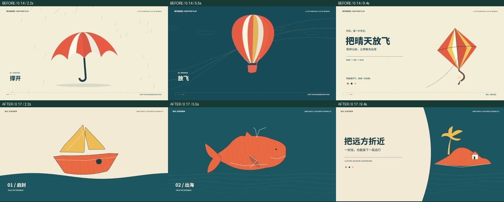
上排修改前 / 下排0.17 · 2.2、5.5、9.4秒实际编码影片取帧展开两支新片的完整时间线取帧
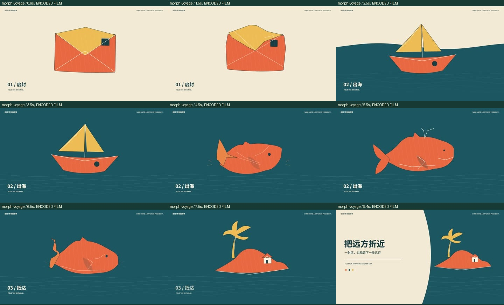
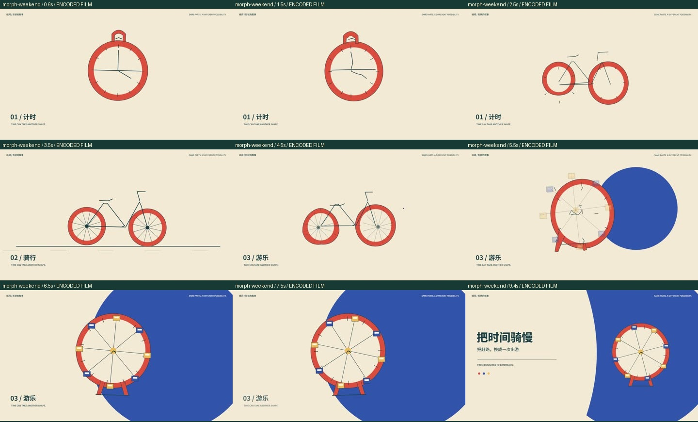
展开首轮关键帧，查看为什么返修
首轮独立渲染的关键帧，用于制作决策，不当作完整作品。最终编码影片的时间线在上方。
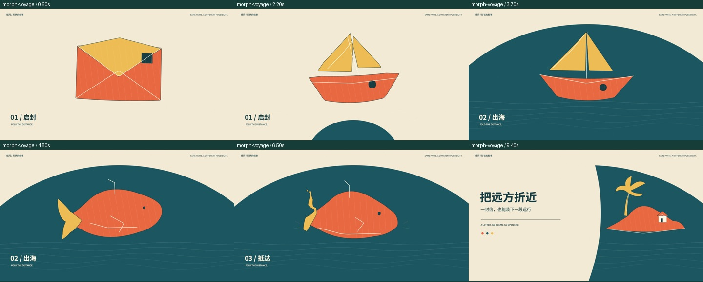
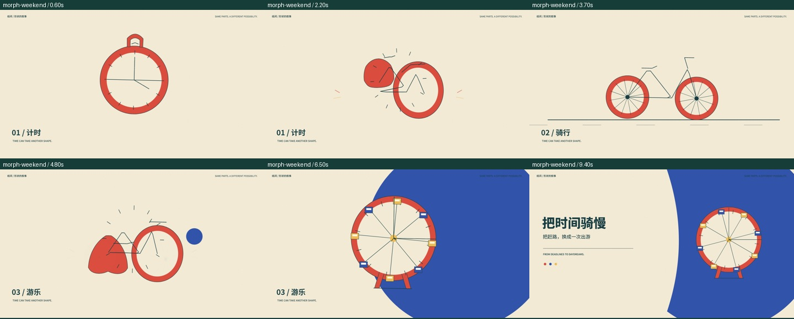
仍需继续的部分：两套人工设计的对象链；中介轮廓仍有抽象形，任意SVG的多孔拓扑和语义对应未实现。轮胎、齿轮与帆不做真实物理解算。
AURORA-GLASS / TWO DIFFERENT STORIES极光玻璃 · 安静而清楚地看到一次操作带来的改变。
原缺口
同样的三张卡和透镜移动，内容任务弱。
实际重做
独立海岸照片经历调色、原片比较、收藏；雨、铃、低音经历选择、增益调整、混合和成品封面。实际内容先合成到场景，再参与玻璃采样与透镜折射。
源库 / 修改前 / 0.17
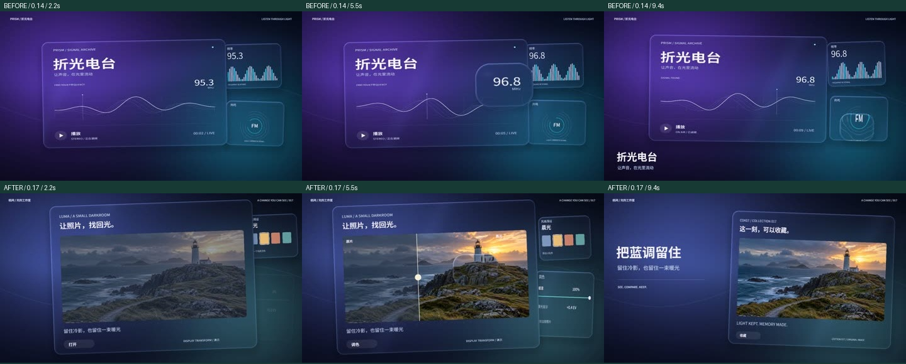
上排修改前 / 下排0.17 · 2.2、5.5、9.4秒实际编码影片取帧展开两支新片的完整时间线取帧
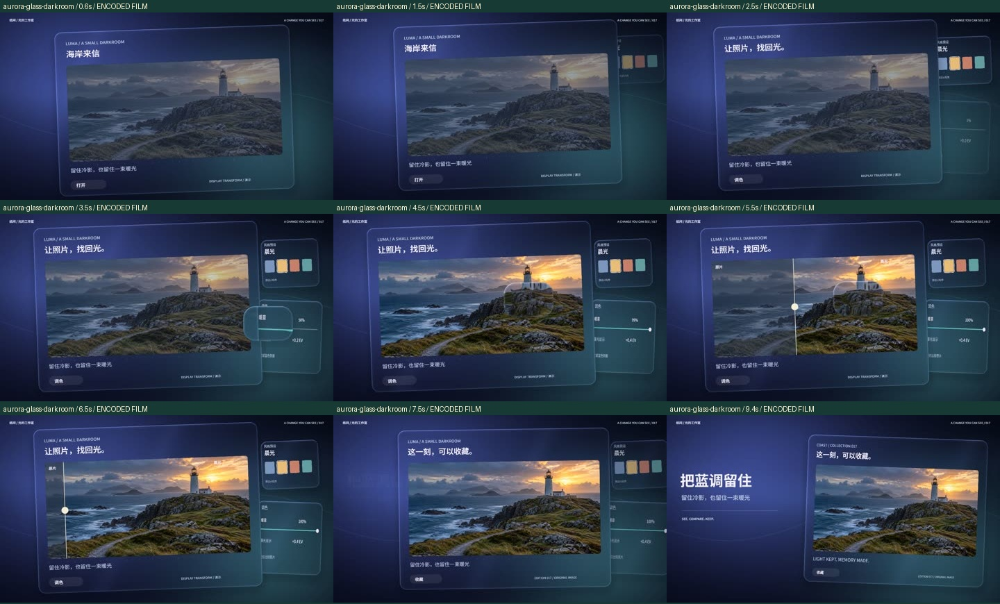
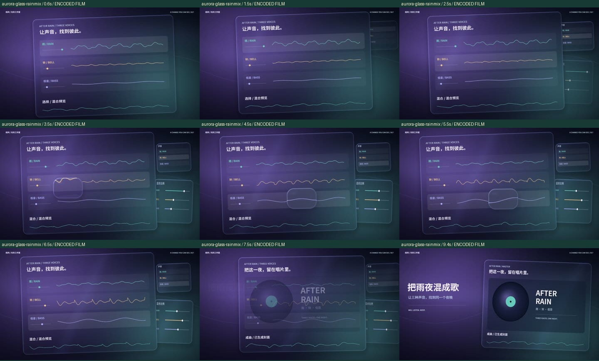
展开首轮关键帧，查看为什么返修
首轮独立渲染的关键帧，用于制作决策，不当作完整作品。最终编码影片的时间线在上方。
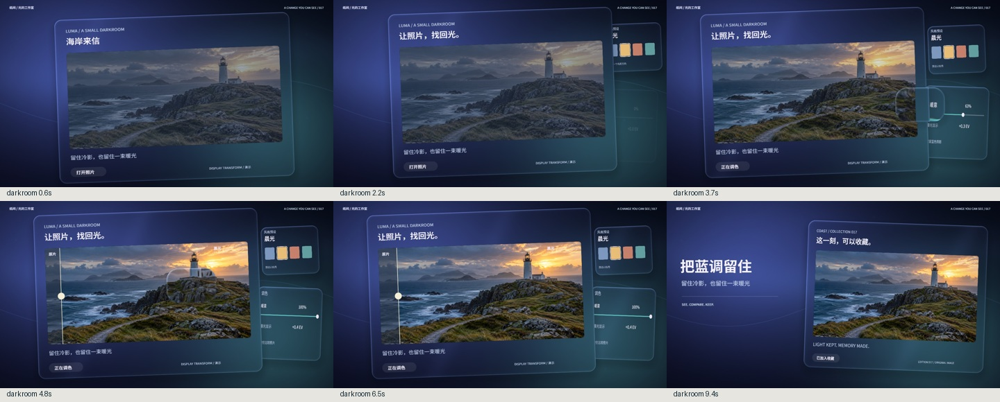
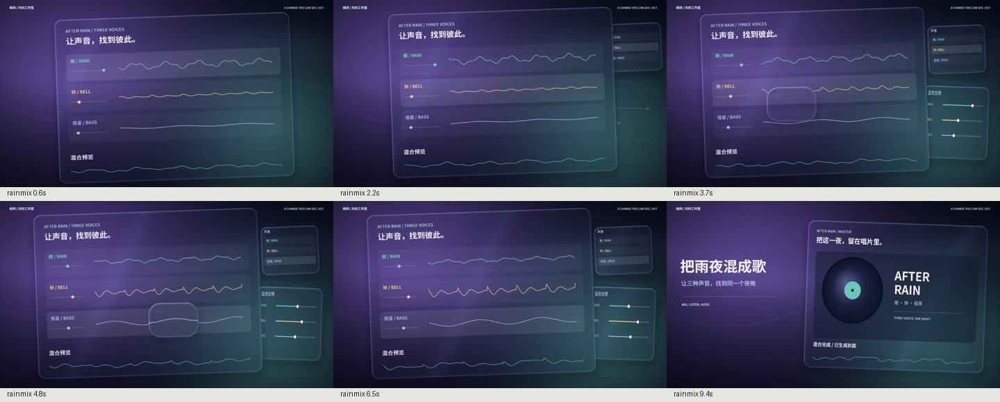
仍需继续的部分：屏幕空间折射，非多次体积光追。照片显示变换未经专业色彩标定；混合幅度驱动画面，配乐是预先合成的事件乐段；波形和音轨是原创程序示意，尚无外部文件导入、频谱分析或自由任务编排。